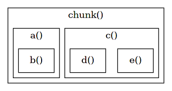
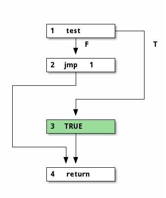

generator
上一章尝试单独解析语法分析过程，本章关注具体的代码生成过程。

1 function vs proto vs closure
在具体深入代码生成之前，先来区分三个概念，function proto 和 closure。
function，是 lua 语言中定义的概念，是 8 种基础类型之一，表示函数，
具体在 lua 代码中用关键字 function 来定义。
如同 string 概念在底层由 TString 结构来实现一样， function 在底层用 Proto 结构来实现，是 function 整体编译之后得到的同语义结构。
编译得到的 Proto 是静态的，在实际运行的时候，需要封装为 Closure 结构，交由 vm 来执行。 Closure 为 upvalue 分配了空间，并统一表示了 c function 和 lua function。
这也是为什么在 object 章节，提到基础类型对应的实现结构时，用 Closure 而不是用 Proto 来表示 function。
所以在编译时期，我们关注 Proto，而在运行时期，才关注 Closure。
1.1 chunk
lua 内部使用了一种巧妙的实现，在编译时，将整个文件当做一个匿名 function 来对待。
相当于文件头加了 function () ，文件尾加了 end 。
383: Proto *luaY_parser (lua_State *L, ZIO *z, Mbuffer *buff, const char *name) { 384: struct LexState lexstate; 385: struct FuncState funcstate; 386: lexstate.buff = buff; 387: luaX_setinput(L, &lexstate, z, luaS_new(L, name)); 388: open_func(&lexstate, &funcstate); 389: funcstate.f->is_vararg = VARARG_ISVARARG; /* main func. is always vararg */ 390: luaX_next(&lexstate); /* read first token */ 391: chunk(&lexstate); 392: check(&lexstate, TK_EOS); 393: close_func(&lexstate); 394: lua_assert(funcstate.prev == NULL); 395: lua_assert(funcstate.f->nups == 0); 396: lua_assert(lexstate.fs == NULL); 397: return funcstate.f; 398: }
可以看到， luaY_parser 读取文件，最终生成并返回 Proto * 。
因为整体分析的入口是 chunk，lua 又将文件当做匿名函数来对待， 这也是很多 lua 书籍中提到 chunk 的原因，表示文件编译得到的结果。
1.2 embeded
如果按照 function 和 Proto 一一对应的关系，会出现函数层级的问题。
比如下面的示例代码，
function a() function b() end end function c() function d() end function e() end end
如果将 lua 代码文件看作 Proto chunk，代码中定义的 a b c d 同样是 function 且编译为 Proto。 但是 function a b c d e 是 lua 代码的一部分，所以其 Proto 也应该被包含在 Proto chunk 中。
lua 内部根据 function 定义的位置，来记录这种包含关系。

function a c 直接定义在代码文件（顶层匿名函数）中， b d e 则直接定义在 a 和 c 中。
Proto 结构中使用 struct Proto * 数组 p（Line 235）来记录其直接包含的 Proto。
228: /* 229: ** Function Prototypes 230: */ 231: typedef struct Proto { 232: CommonHeader; 233: TValue *k; /* constants used by the function */ 234: Instruction *code; 235: struct Proto **p; /* functions defined inside the function */ 236: int *lineinfo; /* map from opcodes to source lines */ 237: struct LocVar *locvars; /* information about local variables */ 238: TString **upvalues; /* upvalue names */ 239: TString *source; 240: int sizeupvalues; 241: int sizek; /* size of `k' */ 242: int sizecode; 243: int sizelineinfo; 244: int sizep; /* size of `p' */ 245: int sizelocvars; 246: int linedefined; 247: int lastlinedefined; 248: GCObject *gclist; 249: lu_byte nups; /* number of upvalues */ 250: lu_byte numparams; 251: lu_byte is_vararg; 252: lu_byte maxstacksize; 253: } Proto;
1.3 FuncState
在 lua 的语法分析中，function 解析是一个重要的部分。
EBNF 和 regex 的区别在于，EBNF 可以描述一种递归过程，而 regex 则不能。
chunk 作为解析 function 的入口，得到 Proto，这个过程在遇到 function 定义时，不断的递归调用，生成 Proto， 并按照层级链接起来。
在了解这个过程之前，要先介绍另一个重要的结构 FuncState 。
57: /* state needed to generate code for a given function */ 58: typedef struct FuncState { 59: Proto *f; /* current function header */ 60: Table *h; /* table to find (and reuse) elements in `k' */ 61: struct FuncState *prev; /* enclosing function */ 62: struct LexState *ls; /* lexical state */ 63: struct lua_State *L; /* copy of the Lua state */ 64: struct BlockCnt *bl; /* chain of current blocks */ 65: int pc; /* next position to code (equivalent to `ncode') */ 66: int lasttarget; /* `pc' of last `jump target' */ 67: int jpc; /* list of pending jumps to `pc' */ 68: int freereg; /* first free register */ 69: int nk; /* number of elements in `k' */ 70: int np; /* number of elements in `p' */ 71: short nlocvars; /* number of elements in `locvars' */ 72: lu_byte nactvar; /* number of active local variables */ 73: upvaldesc upvalues[LUAI_MAXUPVALUES]; /* upvalues */ 74: unsigned short actvar[LUAI_MAXVARS]; /* declared-variable stack */ 75: } FuncState;
从名称可以看出，和 LexState 相似，也用于记录中间状态。 FuncState 用于记录 function 分析过程中的状态，和 function 定义一一对应， 每遇到一个 function 定义时，lua 都会新建一个 FuncState，记录当下解析 function 的中间状态。
1.4 big picture
LexState FuncState Proto 这三者在分析过程中协同生成最终的 Proto。
比如解析如下示例代码，
1: function a() 2: function b() 3: end 4: end
在整体文件分析开始之前，parser 已经准备好 FuncState，通过 LexState.ls 索引， FuncState.f 指向相应要生成的 Proto。

解析第 1 行之后，需要函数定义 a，parser 生成新的 FuncState，并更新 ls.fs 的指向。 同时，fs a 通过 prev 指向 fs chunk，表示层级关系。

第 2 行，遇到函数 b 定义，同样的，生成 FuncState 并更新 ls.fs 的指向。
第 3 行，函数 b 定义结束，此时 ls.fs 指向 fs b 的 prev，回到上个函数定义层级。 并将函数 b 生成的 Proto 链接到上层函数 a 的 Proto。
此时，fs b 已经结束其作用。
第 4 行，函数 a 定义结束，同上，更新 ls.fs 指向，并链接 Proto a 到 Proto chunk。
最终返回 Proto chunk，ls 和 fs 都已经结束其使命，毕竟它们的作用只用于记录中间状态
在 parser 内部，上面描述的过程发生在 open_func() close_func() 中，读者可仔细体会其细节。
328: static void open_func (LexState *ls, FuncState *fs) { 329: lua_State *L = ls->L; 330: Proto *f = luaF_newproto(L); 331: fs->f = f; 332: fs->prev = ls->fs; /* linked list of funcstates */ 333: fs->ls = ls; 334: fs->L = L; 335: ls->fs = fs; 336: fs->pc = 0; 337: fs->lasttarget = -1; 338: fs->jpc = NO_JUMP; 339: fs->freereg = 0; 340: fs->nk = 0; 341: fs->np = 0; 342: fs->nlocvars = 0; 343: fs->nactvar = 0; 344: fs->bl = NULL; 345: f->source = ls->source; 346: f->maxstacksize = 2; /* registers 0/1 are always valid */ 347: fs->h = luaH_new(L, 0, 0); 348: /* anchor table of constants and prototype (to avoid being collected) */ 349: sethvalue2s(L, L->top, fs->h); 350: incr_top(L); 351: setptvalue2s(L, L->top, f); 352: incr_top(L); 353: } 354: 355: 356: static void close_func (LexState *ls) { 357: lua_State *L = ls->L; 358: FuncState *fs = ls->fs; 359: Proto *f = fs->f; 360: removevars(ls, 0); 361: luaK_ret(fs, 0, 0); /* final return */ 362: luaM_reallocvector(L, f->code, f->sizecode, fs->pc, Instruction); 363: f->sizecode = fs->pc; 364: luaM_reallocvector(L, f->lineinfo, f->sizelineinfo, fs->pc, int); 365: f->sizelineinfo = fs->pc; 366: luaM_reallocvector(L, f->k, f->sizek, fs->nk, TValue); 367: f->sizek = fs->nk; 368: luaM_reallocvector(L, f->p, f->sizep, fs->np, Proto *); 369: f->sizep = fs->np; 370: luaM_reallocvector(L, f->locvars, f->sizelocvars, fs->nlocvars, LocVar); 371: f->sizelocvars = fs->nlocvars; 372: luaM_reallocvector(L, f->upvalues, f->sizeupvalues, f->nups, TString *); 373: f->sizeupvalues = f->nups; 374: lua_assert(luaG_checkcode(f)); 375: lua_assert(fs->bl == NULL); 376: ls->fs = fs->prev; 377: /* last token read was anchored in defunct function; must reanchor it */ 378: if (fs) anchor_token(ls); 379: L->top -= 2; /* remove table and prototype from the stack */ 380: }
1.5 FuncState vs Proto
FuncState 和 Proto 作为分析过程中两个最重要的结构，值得详细做一番了解。
仔细观察两个结构内部的字段，会发现两者之间有紧密的联系，界限很模糊， 都些许记录了分析过程的结果。 关键的差异在于，Proto 只保留最终结果，而 FuncState 记录中间状态。
对应这个原则，来详细探究下两个结构的内部。
先来看 Proto。
228: /* 229: ** Function Prototypes 230: */ 231: typedef struct Proto { 232: CommonHeader; 233: TValue *k; /* constants used by the function */ 234: Instruction *code; 235: struct Proto **p; /* functions defined inside the function */ 236: int *lineinfo; /* map from opcodes to source lines */ 237: struct LocVar *locvars; /* information about local variables */ 238: TString **upvalues; /* upvalue names */ 239: TString *source; 240: int sizeupvalues; 241: int sizek; /* size of `k' */ 242: int sizecode; 243: int sizelineinfo; 244: int sizep; /* size of `p' */ 245: int sizelocvars; 246: int linedefined; 247: int lastlinedefined; 248: GCObject *gclist; 249: lu_byte nups; /* number of upvalues */ 250: lu_byte numparams; 251: lu_byte is_vararg; 252: lu_byte maxstacksize; 253: } Proto;
其中字段分为 3 部分来看
暂不讨论
int *lineinfoTString *sourceint linedefinedint lastlinedefinedGCObject *gclist
元信息
lu_byte numparams，函数的固定参数个数lu_byte is_vararg，函数的可变参数lu_byte maxstacksize，函数运行时，最大使用的栈空间
数组结果
TValue *k，常量表Instruction *code，字节码struct Proto **p，内部其它函数定义struct LocVar *locvars，局部变量信息TString **upvalues，upvalue 信息- 与 len size 相关的字段
对照之前对 vm 执行模型的讨论，code 和 k 就与之对应。
这里一个有意思的区别，在于 size 和 n。
上面提到的 5 个数组，都对应一个 size 字段，用于记录数组的大小。 同时，也对应一个 n 字段，用于记录当前数组已使用的大小（下一个空闲的位置）。
在分析的过程中，数组 size 值记录空间总长度，当空间不足时，会继续扩大分配。 而数组 n 值用于时刻标识下一个空闲索引，记录分析结果并自增，它的值比 size 小。
当最终分析结束时，将 n 值赋值给相应的 size 值，省略多余不用的空间，此时两者才会相同。
如此看来，n 值应该存放在 FuncState 中，但是存在例外的是 lu_byte nups 。


相同的视角，来观察 FuncState。
57: /* state needed to generate code for a given function */ 58: typedef struct FuncState { 59: Proto *f; /* current function header */ 60: Table *h; /* table to find (and reuse) elements in `k' */ 61: struct FuncState *prev; /* enclosing function */ 62: struct LexState *ls; /* lexical state */ 63: struct lua_State *L; /* copy of the Lua state */ 64: struct BlockCnt *bl; /* chain of current blocks */ 65: int pc; /* next position to code (equivalent to `ncode') */ 66: int lasttarget; /* `pc' of last `jump target' */ 67: int jpc; /* list of pending jumps to `pc' */ 68: int freereg; /* first free register */ 69: int nk; /* number of elements in `k' */ 70: int np; /* number of elements in `p' */ 71: short nlocvars; /* number of elements in `locvars' */ 72: lu_byte nactvar; /* number of active local variables */ 73: upvaldesc upvalues[LUAI_MAXUPVALUES]; /* upvalues */ 74: unsigned short actvar[LUAI_MAXVARS]; /* declared-variable stack */ 75: } FuncState;
暂不讨论
Proto *fstruct FuncState *prevstruct LexState *lsstruct lua_State *L
后续讨论
struct BlockCnt *blint lasttargetint jpcint freereg
中间结果
upvaldesc upvalues[LUAI_MAXUPVALUES]unsigned short actvar[LUAI_MAXVARS]- 其它 n 字段
两个数组是定长的，即 size 是固定的， f->nups fs->nactvar 用于对应其 n 字段。
在编译过程中，所得到的结果会不断的存储入上述数组及其它字段中。
2 generate
从某种角度看，编译过程就是规则间的同义转换过程。
代码生成，最终将符合语法规则的 lua 代码，生成为 vm 可执行的同义字节码， 这个过程是隐藏在语法分析下的艺术。
两个规则间可以进行同义转换的连接点，在于对 vm 的共识， 正因为编译器"懂得" vm，知晓字节码的格式与功能，知晓运行时的栈结构， 知晓 k 表 Gbl 表的读取方式，才能生成 vm 可执行的同义字节码。
这种共识贯穿在整个代码生成的过程中。
但是无论编译器如何了解 vm，编译时和运行时还是存在区别的。 代码生成时，只是想象存在一个假想的 vm，它在执行生成的所有结果。
所以代码生成这个过程是最为繁杂的，到 vm 真正运行时反而轻松了，只需要读指令，执行指令就可以了。
阅读代码生成相关的代码，笔者还没有精确地把握住其中的原理，只能提供几个原则给读者参考，
- 总体是语法制导翻译的过程
- 使用后缀方式的生成顺序，比如 a + b 按照 a b + 的顺序来转换生成
- 精确模拟 vm 的运行方式，包括栈运算，Gbl 表及其它
章节结束之后，读者可以多使用调试器分析示例代码，探索其中的奥妙。
3 key concept
在仔细探索代码生成之前，先明确几个在生成过程中的重点。
3.1 variable
从作用域来看，lua 中的变量有 3 类，分别为 local upvalue global ，
三者在底层的实现方式各不相同。
3.1.1 local
local 变量的活动范围（active），开始于在作用域中出现的那一刻，一直到作用域结束， 而作用域是有明显的栈特性的，新开辟作用域时入栈，离开作用域时出栈。
在一个作用域内，local 变量按照声明顺序入栈，离开作用域时全部出栈，变为 inactive 状态。
利用这个特性，lua 在编译时，在 fs 中用 actvar 和 nactvar 时刻记录着当前 active local 变量的状态。
比如如下示例代码，
local a do local b do local c end end do local d do local e end end
在代码分析的不同时刻， fs->actvar 记录的栈状态是这样的，
上面只是粗略描述了 active local 变量的栈状态，而实际在 parser 内部，是通过两个数组来存储的。

数组 fs->actvar 的元素是 unsigned short 类型，只用来记录变量的索引。
索引数组 f->locvars 中的元素，其中元素类型为 struct LocVar * 。
262: typedef struct LocVar { 263: TString *varname; 264: int startpc; /* first point where variable is active */ 265: int endpc; /* first point where variable is dead */ 266: } LocVar;
LocVar 主要记录变量的名字， startpc endpc 在字节码层面记录其活动范围。
宏 getlocvar 精确描述了图示过程。
32: #define getlocvar(fs, i) ((fs)->f->locvars[(fs)->actvar[i]])
3.1.2 upvalue
upvalue 在本文翻译为上值，它即非 local，又不是 global。 直观从代码上看，即引用作用域之外的变量。
lua 将 function 作为基础类型之一，可以作为普通变量，参数，返回值，赋值，而四处流转。 又因为 local 变量的作用域限定于词法，这便是 upvalue 机制发挥作用的地方。
如下示例代码，
local function outer() local a = 0 local function inner() a = a + 1 print(a) end inner() return inner end local f = outer() f() f()
1 2 3
内部第 1 次调用 inner() 时，输出 1 。 当调用 outer()，将 inner 赋值与 f，调用两次 f() 得到 2 3 。
第 1 次调用 inner() 时，依然在 a 的作用域内，输出 1 是符合直觉的。
问题在于调用 f() 时，因为 a 只作用在 outer 的作用域，而 f 在 outer 作用域外部， 已经离开了 a 的作用域，这种情况下为何还可以访问 a ？
这便是闭包机制的由来，a 对于 inner 而言是 upvalue 类型。 这也是 lua 中为何 function 不是 function 而是 closure 的原因，function 及 upvalue 组成了 closure， 所有 func 在运行时都封装为 closure 来运行，其中重要的原因就在于单独分配 upvalue 空间并管理。
详细的说，第 1 次调用 inner() 时，local a 依然存活，称 upvalue a 为 open 状态。 当离开 outer() 作用域，upvalue a 为 close 状态。
3.1.3 global
如果依然说，global 变量是除 local 变量和 upvalue 变量的变量，读者肯定不信服。
之所以存在 upvalue 和 global，隐含的一点是，在 lua 中外层变量对于内层是可见的， 既然是可见的，对于外层变量引用自然有一个查找的过程，变量类型正是在查找的过程中确定的。
- 在当前作用域中可以找到的，为 local 类型
- 在当前作用域之外的作用域可以找到的，为 upvalue 类型
- 所有作用域都无法找到的，为 global 类型
按照这个逻辑，顶层的 chunk 是没有 upvalue 的，在当前作用域中查找不到的变量， 只能是 global 类型。
setfenv 影响的就是函数的 global 环境， 设定不同的 global 表，可以影响内部对 global 的引用， 实现不同的运行效果，类似于封装成一个小沙盒，
比如如下代码，变量 a 对 outer inner 都是全局变量，所以全部修改都影响到 global a 的值。
local function outer() a = 10 local function inner() a = a + 1 return a end return inner end local f = outer() print(f(), a) print(f(), a) print(f(), a)
11 11 12 12 13 13
3.2 register
寄存器的主要作用是，存取 local 变量和存取中间结果。
寄存器在编译时是一个抽象的概念，没有具体的分配空间，编译器只知晓存在这块区域， 并且按照自己的需要来使用和调试。
而在实际运行时，寄存器存储在 vm 的栈中。
4 statement
本节开始从实例具体分析代码生成的过程，和实例一起来探求其中的生成模式。
因为语法元素的递归性，其中的组合是无限的，所以本节只挑选讲解部分重要的“原子性”的部分， 至于各种组合的变数读者可自由探索。
4.1 tool
在开始以实例为基础的探索之前，先详细介绍相应工具的使用。
以交互式启动 chunkspy，用于临时检验一些想法。
$ make spy
分析特定 lua 文件，输出相应的编译结果。
$ make -s inspect source=lua_file_path
比如分析如下代码，
local a = 1
会输出如下结果，
1: ; function [0] definition (level 1) 2: ; 0 upvalues, 0 params, 2 is_vararg, 2 stacks 3: .function 0 0 2 2 4: .local "a" ; 0 5: .const 1 ; 0 6: [1] loadk 0 0 ; 1 7: [2] return 0 1 8: ; end of function
逐行来看，
line 1
level 1 指的是第一层级，即 chunk； function [0] 表明是当前层级的第 1 个函数（以 0 开始索引）
line 2
函数有 0 个 upvalue，0 个参数，按 0b010 模式接收可变参数，需要分配栈容量 2。
line 3
意义和 line 2 相同，line 2 是 line 3 的注释
line 4 5
.local 列出所有局部变量的名称及索引，即 f->locvars 的内容 .const 列出 k 表的内容及索引
line 6 7
详细打印 f->code 指令，最终一行总是默认生成一条 return 指令
line 8
注释，表明 function 结束
读者结合 opcode 章节对各个指令功能的理解，不难理解 lua 代码和字节码的同义关系。
4.2 local
先来观察 local 语句。
语法描述如下，
stat ::= localstat localstat ::= LOCAL NAME {`,' NAME} [`=' explist] localstat ::= LOCAL FUNCTION NAME body
localstat 可用于定义局部变量和局部函数。
函数部分到后面小节再讨论，对于局部变量，根据是否赋值可分为两种情况。
4.2.1 no assignment
如下简单的代码示例，定义局部变量，无赋值，
local a, b, c
分析得到如下结果，
; function [0] definition (level 1) ; 0 upvalues, 0 params, 2 is_vararg, 3 stacks .function 0 0 2 3 .local "a" ; 0 .local "b" ; 1 .local "c" ; 2 [1] return 0 1 ; end of function
示例代码只是单纯进行了局部变量的声明，最终没有生成任何字节码。
分析的过程，就是递归向下的函数过程， chunk -> stat -> localstat 。
1179: static void localstat (LexState *ls) { 1180: /* stat -> LOCAL NAME {`,' NAME} [`=' explist1] */ 1181: int nvars = 0; 1182: int nexps; 1183: expdesc e; 1184: do { 1185: new_localvar(ls, str_checkname(ls), nvars++); 1186: } while (testnext(ls, ',')); 1187: if (testnext(ls, '=')) 1188: nexps = explist1(ls, &e); 1189: else { 1190: e.k = VVOID; 1191: nexps = 0; 1192: } 1193: adjust_assign(ls, nvars, nexps, &e); 1194: adjustlocalvars(ls, nvars); 1195: }
关键在于 newlocalvar 函数，在循环中读入 a b c，并进行变量分析。
160: static void new_localvar (LexState *ls, TString *name, int n) { 161: FuncState *fs = ls->fs; 162: luaY_checklimit(fs, fs->nactvar+n+1, LUAI_MAXVARS, "local variables"); 163: fs->actvar[fs->nactvar+n] = cast(unsigned short, registerlocalvar(ls, name)); 164: }
143: static int registerlocalvar (LexState *ls, TString *varname) { 144: FuncState *fs = ls->fs; 145: Proto *f = fs->f; 146: int oldsize = f->sizelocvars; 147: luaM_growvector(ls->L, f->locvars, fs->nlocvars, f->sizelocvars, 148: LocVar, SHRT_MAX, "too many local variables"); 149: while (oldsize < f->sizelocvars) f->locvars[oldsize++].varname = NULL; 150: f->locvars[fs->nlocvars].varname = varname; 151: luaC_objbarrier(ls->L, f, varname); 152: return fs->nlocvars++; 153: }
其中根据变量出现的顺序，依次使用 registerlocalvar 得到变量索引，再记录到 fs->actvar 中。
这就是前面讨论过的，局部变量的存储方式，使用 fs->actvar 记录索引， f->locvars 记录变量名称。
newlocvar 完成的就是这个过程。
这也对应了 chunkspy 分析结果中的 .local 部分。
4.2.2 with assignment
再来看 local 变量赋值的情况。
分析示例代码，得到如下结果，
local a, b, c, d, e = 10, "second", nil, true, false
; function [0] definition (level 1) ; 0 upvalues, 0 params, 2 is_vararg, 5 stacks .function 0 0 2 5 .local "a" ; 0 .local "b" ; 1 .local "c" ; 2 .local "d" ; 3 .local "e" ; 4 .const 10 ; 0 .const "second" ; 1 [1] loadk 0 0 ; 10 [2] loadk 1 1 ; "second" [3] loadnil 2 2 [4] loadbool 3 1 0 ; true [5] loadbool 4 0 0 ; false [6] return 0 1 ; end of function
除了 .local 条目变多了，也增加了 .const 部分，意味着 k 表多出了 2 项记录。
依旧从 localstat 来分析，
1179: static void localstat (LexState *ls) { 1180: /* stat -> LOCAL NAME {`,' NAME} [`=' explist1] */ 1181: int nvars = 0; 1182: int nexps; 1183: expdesc e; 1184: do { 1185: new_localvar(ls, str_checkname(ls), nvars++); 1186: } while (testnext(ls, ',')); 1187: if (testnext(ls, '=')) 1188: nexps = explist1(ls, &e); 1189: else { 1190: e.k = VVOID; 1191: nexps = 0; 1192: } 1193: adjust_assign(ls, nvars, nexps, &e); 1194: adjustlocalvars(ls, nvars); 1195: }
在记录变量信息之后，遇到 = ，开始分析 = 后的 表达式列表 ，作为变量的赋值内容。
后面的表达式都是简单表达式，最终会调用 simpleexp 进行解析。
explist ::= expr {`,' expr} expr ::= subexpr subexpr ::= (simpleexp | unop subexpr) {binop subexpr} simpleexp ::= NUMBER | STRING | NIL | TRUE | FALSE | DOTS | constructor | FUNCTION body | primaryexp
下面有趣的地方来了，字节码和 k 表中的元素是何时生成的？ 这就和代码生成的方式紧密相关了。
parser 模块中代码生成的强大在于，它是流式生成的。 意思即一边读入 token，分析状态，就直接生成代码！
从代码具体来看，
596: static int explist1 (LexState *ls, expdesc *v) { 597: /* explist1 -> expr { `,' expr } */ 598: int n = 1; /* at least one expression */ 599: expr(ls, v); 600: while (testnext(ls, ',')) { 601: luaK_exp2nextreg(ls->fs, v); 602: expr(ls, v); 603: n++; 604: } 605: return n; 606: }
在第 1 次分析表达式 时，读入并分析了 10，并在 第 2 次分析表达式 "second" 之前，已经生成代码并更新了 k 表。
先来看 expr()，由于分析的是简单表达式，最终会调用 simpleexp 进行分析，
727: static void simpleexp (LexState *ls, expdesc *v) { 728: /* simpleexp -> NUMBER | STRING | NIL | true | false | ... | 729: constructor | FUNCTION body | primaryexp */ 730: switch (ls->t.token) { 731: case TK_NUMBER: { 732: init_exp(v, VKNUM, 0); 733: v->u.nval = ls->t.seminfo.r; 734: break; 735: } 736: case TK_STRING: { 737: codestring(ls, v, ls->t.seminfo.ts); 738: break; 739: } 740: case TK_NIL: { 741: init_exp(v, VNIL, 0); 742: break; 743: } 744: case TK_TRUE: { 745: init_exp(v, VTRUE, 0); 746: break; 747: } 748: case TK_FALSE: { 749: init_exp(v, VFALSE, 0); 750: break; 751: } 752: case TK_DOTS: { /* vararg */ 753: FuncState *fs = ls->fs; 754: check_condition(ls, fs->f->is_vararg, 755: "cannot use " LUA_QL("...") " outside a vararg function"); 756: fs->f->is_vararg &= ~VARARG_NEEDSARG; /* don't need 'arg' */ 757: init_exp(v, VVARARG, luaK_codeABC(fs, OP_VARARG, 0, 1, 0)); 758: break; 759: } 760: case '{': { /* constructor */ 761: constructor(ls, v); 762: return; 763: } 764: case TK_FUNCTION: { 765: luaX_next(ls); 766: body(ls, v, 0, ls->linenumber); 767: return; 768: } 769: default: { 770: primaryexp(ls, v); 771: return; 772: } 773: } 774: luaX_next(ls); 775: }
第 1 次分析 10 时，token 类型是 TK_NUMBER ，直接填充 expdesc 即可，
然后调用 luaKexp2nextreg 生成代码。
luaKexp2nextreg 是一个综合过程，由更基础的几个函数组成。
深入分析之前，先来补充之前 FuncState 未描述的一个字段，freereg。
字节码被 vm 运行时，vm 维持一个栈，来存放寄存器和中间结果。 编译器只知晓这个栈的存在，但是在编译时，这个栈并没有真实存在， 只能凭借想象去操作它。
freereg 就是用来记录栈顶的变量。
当存储新的寄存器值时，freereg 就会自增，为寄存器开出空间；
209: void luaK_reserveregs (FuncState *fs, int n) { 210: luaK_checkstack(fs, n); 211: fs->freereg += n; 212: }
相应的，如果寄存器不再使用，freereg 会自减，回收相应的空间。
215: static void freereg (FuncState *fs, int reg) { 216: if (!ISK(reg) && reg >= fs->nactvar) { 217: fs->freereg--; 218: lua_assert(reg == fs->freereg); 219: } 220: }
从中可以看出，freereg 将栈分为两部分，在栈底为 local 变量保留空间（reg >= fs->nactvar）， 上层用于计算中间结果。
414: void luaK_exp2nextreg (FuncState *fs, expdesc *e) { 415: luaK_dischargevars(fs, e); 416: freeexp(fs, e); 417: luaK_reserveregs(fs, 1); 418: exp2reg(fs, e, fs->freereg - 1); 419: }
在 luaKexp2nextreg 中，先找出下一个可用的栈/寄存器空间，然后将表达式的值解析到寄存器中， 即生成字节码。
最终在 discharge2reg 函数生成相应指令 loadk。
这里出现了第二个重点，对 k 表的操作。
因为其类型为数字，所以调用的是 luaKnumberK。
229: static int addk (FuncState *fs, TValue *k, TValue *v) { 230: lua_State *L = fs->L; 231: TValue *idx = luaH_set(L, fs->h, k); 232: Proto *f = fs->f; 233: int oldsize = f->sizek; 234: if (ttisnumber(idx)) { 235: lua_assert(luaO_rawequalObj(&fs->f->k[cast_int(nvalue(idx))], v)); 236: return cast_int(nvalue(idx)); 237: } 238: else { /* constant not found; create a new entry */ 239: setnvalue(idx, cast_num(fs->nk)); 240: luaM_growvector(L, f->k, fs->nk, f->sizek, TValue, 241: MAXARG_Bx, "constant table overflow"); 242: while (oldsize < f->sizek) setnilvalue(&f->k[oldsize++]); 243: setobj(L, &f->k[fs->nk], v); 244: luaC_barrier(L, f, v); 245: return fs->nk++; 246: } 247: } 248: 249: 250: int luaK_stringK (FuncState *fs, TString *s) { 251: TValue o; 252: setsvalue(fs->L, &o, s); 253: return addk(fs, &o, &o); 254: } 255: 256: 257: int luaK_numberK (FuncState *fs, lua_Number r) { 258: TValue o; 259: setnvalue(&o, r); 260: return addk(fs, &o, &o); 261: } 262: 263: 264: static int boolK (FuncState *fs, int b) { 265: TValue o; 266: setbvalue(&o, b); 267: return addk(fs, &o, &o); 268: } 269: 270: 271: static int nilK (FuncState *fs) { 272: TValue k, v; 273: setnilvalue(&v); 274: /* cannot use nil as key; instead use table itself to represent nil */ 275: sethvalue(fs->L, &k, fs->h); 276: return addk(fs, &k, &v); 277: }
所有操作 k 表的方法，最终都使用 addk 操作，其作用也很简单， 在 k 表中搜索，如果存在，则直接返回相应索引，其中使用 table fs->h 做 k 表元素的反向索引，加快搜索过程； 若不存在，则自增，并返回相应的索引。
将数字 10 存储入 k 表之后，生成 loadk 指令，将 freereg 和 k 索引作为其操作数。
至此，parser 只读入了 token 10，便已经完成了操作 k 表，记录常数，并生成对应的指令，令人惊奇。
对于第 2 个表达式 "second"，在 simpleexp 时，提前调用 codestring 加入了 k 表， 将其作为 VK 类型来对待。
133: static void codestring (LexState *ls, expdesc *e, TString *s) { 134: init_exp(e, VK, luaK_stringK(ls->fs, s)); 135: }
同样的生成 loadk 指令。
回到 localstat()，前面对变量和表达式进行解析之后，记录了 = 两边的数量 nvars nexps，
adjust_assign() 进行左右数量的调整，多余的 var 空间置为 nil，多余的 exp 则省略。
最终调用 adjustlocalvars() 调整 fs->nactvar 的值。
4.3 expdesc
从 localstat 的示例中，已经看到代码生成的逻辑是别具一格的。
结合递归下降，语法制导，后缀顺序，vm opcode 语义，得以以线性顺序生成字节码。
其中 expdesc 的作用是非常重要的，将一些属性附加到文法符号上，辅助代码生成过程。
/* ** Expression descriptor */ typedef enum { VVOID, /* no value */ VNIL, VTRUE, VFALSE, VK, /* info = index of constant in `k' */ VKNUM, /* nval = numerical value */ VLOCAL, /* info = local register */ VUPVAL, /* info = index of upvalue in `upvalues' */ VGLOBAL, /* info = index of table; aux = index of global name in `k' */ VINDEXED, /* info = table register; aux = index register (or `k') */ VJMP, /* info = instruction pc */ VRELOCABLE, /* info = instruction pc */ VNONRELOC, /* info = result register */ VCALL, /* info = instruction pc */ VVARARG /* info = instruction pc */ } expkind; typedef struct expdesc { expkind k; union { struct { int info, aux; } s; lua_Number nval; } u; int t; /* patch list of `exit when true' */ int f; /* patch list of `exit when false' */ } expdesc;
expdesc 用于记录 exp 表达式的相关信息。
和 token 类型类似，expdesc 内部有字段记录类型，其它字段记录附加信息。
所有类型用 enum expkind 表示，相应类型后的注释描述了对应其它字段需要记录的信息。
其中重点的函数是 discharge2reg 和 dischargevars，用于解析相应的 expdesc，生成代码并更新状态。
| expkind | u | discharge |
|---|---|---|
| VVOID | ||
| VNIL | 生成指令 loadnil，重置为 VNONRELOC | |
| VTRUE | 生成指令 loadbool，重置为 VNONRELOC | |
| VFALSE | 生成指令 loadbool，重置为 VNONRELOC | |
| VK | info 记录 k 表索引 | 生成指令 loadk，重置为 VNONRELOC |
| VKNUM | nval 记录数值 | 生成指令 loadk，重置为 VNONRELOC |
| VLOCAL | info 记录寄存器索引 | 重置为 VNONRELOC |
| VUPVAL | info 记录 upvalues 数组中的索引 | 生成指令 GETUPVAL, 重置为 VRELOCABLE，info 记录指令索引 |
| VGLOBAL | info 全局表的索引，aux 全局名称的 k 表索引 | 生成指令 GETGLOBAL, 重置为 VRELOCABLE，info 记录指令索引 |
| VINDEXED | info table 所在寄存器的索引，aux 索引值的 RK 值 | 生成指令 GETTABLE, 重置为 VRELOCABLE，info 记录指令索引 |
| VJMP | info 当前指令索引 | |
| VRELOCABLE | info 当前指令索引 | 定位到指令位置，修改 A 参数为 reg |
| VNONRELOC | info 最终解析得到的寄存器位置 | 如果当前寄存器位置与目标位置不同，则生成 move 指令；相同则什么都不做 |
| VCALL | info 当前指令索引 | 重置为 VNONRELOC，info 记录指令的 A 参数 |
| VVARARG | info 当前指令索引 | 重置为 VRELOCABLE |
具体如此设计的原因及作用，还需要读者在不同情况下再尝试领会。
4.4 assign
本节来探讨赋值语句
stat ::= exprstat exprstat ::= assignstat assignstat ::= (prefixexp | primaryexp (`.' NAME | `[' expr `]')) assignment assignment ::= `,' assignstat | `=' explist primaryexp ::= prefixexp {`.' NAME | `[' expr `]' | `:' NAME funcargs | funcargs} prefixexp ::= NAME | `(' expr `)'
赋值语句根据变量的类型不同，分为 global upvalue local indexed 几种情况， 对应 expdesc 中的 VGLOBAL VUPVAL VLOCAL VINDEXED。
4.4.1 global
先来看 global 的赋值情况。
分析如下代码，
a, b, c = 10, 20, 30
; function [0] definition (level 1) ; 0 upvalues, 0 params, 2 is_vararg, 3 stacks .function 0 0 2 3 .const "a" ; 0 .const "b" ; 1 .const "c" ; 2 .const 10 ; 3 .const 20 ; 4 .const 30 ; 5 [1] loadk 0 3 ; 10 [2] loadk 1 4 ; 20 [3] loadk 2 5 ; 30 [4] setglobal 2 2 ; c [5] setglobal 1 1 ; b [6] setglobal 0 0 ; a [7] return 0 1 ; end of function
从 chunk 递归向下，最终到达 assignment 函数。
从 ebnf 描述中可以看出，assignment 是一个递归的过程。
931: static void assignment (LexState *ls, struct LHS_assign *lh, int nvars) { 932: expdesc e; 933: check_condition(ls, VLOCAL <= lh->v.k && lh->v.k <= VINDEXED, 934: "syntax error"); 935: if (testnext(ls, ',')) { /* assignment -> `,' primaryexp assignment */ 936: struct LHS_assign nv; 937: nv.prev = lh; 938: primaryexp(ls, &nv.v); 939: if (nv.v.k == VLOCAL) 940: check_conflict(ls, lh, &nv.v); 941: luaY_checklimit(ls->fs, nvars, LUAI_MAXCCALLS - ls->L->nCcalls, 942: "variables in assignment"); 943: assignment(ls, &nv, nvars+1); 944: } 945: else { /* assignment -> `=' explist1 */ 946: int nexps; 947: checknext(ls, '='); 948: nexps = explist1(ls, &e); 949: if (nexps != nvars) { 950: adjust_assign(ls, nvars, nexps, &e); 951: if (nexps > nvars) 952: ls->fs->freereg -= nexps - nvars; /* remove extra values */ 953: } 954: else { 955: luaK_setoneret(ls->fs, &e); /* close last expression */ 956: luaK_storevar(ls->fs, &lh->v, &e); 957: return; /* avoid default */ 958: } 959: } 960: init_exp(&e, VNONRELOC, ls->fs->freereg-1); /* default assignment */ 961: luaK_storevar(ls->fs, &lh->v, &e); 962: }
在遇到 = 之前，执行 if 语句块，递归调用 primaryexp 分析变量；
遇到 = 之后，执行 else 语句块，分析表达式。
在递归的终点，将表达式得到的值赋值给变量。
因为示例代码中变量都很简单，primaryexp 主要调用 prefixexp 进行分析。
667: static void prefixexp (LexState *ls, expdesc *v) { 668: /* prefixexp -> NAME | '(' expr ')' */ 669: switch (ls->t.token) { 670: case '(': { 671: int line = ls->linenumber; 672: luaX_next(ls); 673: expr(ls, v); 674: check_match(ls, ')', '(', line); 675: luaK_dischargevars(ls->fs, v); 676: return; 677: } 678: case TK_NAME: { 679: singlevar(ls, v); 680: return; 681: } 682: default: { 683: luaX_syntaxerror(ls, "unexpected symbol"); 684: return; 685: } 686: } 687: }
对应其中的 TK_NAME 类型，调用 singlevar 确定变量的类型，内容调用 singlevaraux 来实现。
224: static int singlevaraux (FuncState *fs, TString *n, expdesc *var, int base) { 225: if (fs == NULL) { /* no more levels? */ 226: init_exp(var, VGLOBAL, NO_REG); /* default is global variable */ 227: return VGLOBAL; 228: } 229: else { 230: int v = searchvar(fs, n); /* look up at current level */ 231: if (v >= 0) { 232: init_exp(var, VLOCAL, v); 233: if (!base) 234: markupval(fs, v); /* local will be used as an upval */ 235: return VLOCAL; 236: } 237: else { /* not found at current level; try upper one */ 238: if (singlevaraux(fs->prev, n, var, 0) == VGLOBAL) 239: return VGLOBAL; 240: var->u.s.info = indexupvalue(fs, n, var); /* else was LOCAL or UPVAL */ 241: var->k = VUPVAL; /* upvalue in this level */ 242: return VUPVAL; 243: } 244: } 245: } 246: 247: 248: static void singlevar (LexState *ls, expdesc *var) { 249: TString *varname = str_checkname(ls); 250: FuncState *fs = ls->fs; 251: if (singlevaraux(fs, varname, var, 1) == VGLOBAL) 252: var->u.s.info = luaK_stringK(fs, varname); /* info points to global name */ 253: }
singlevaraux 是非常关键的过程，回忆之前在分析过程中，关于嵌套的 function 定义和 fs->prev 的链条， singlevaraux 就顺着 fs->prev 不断向上层作用域寻找变量。
如果 fs == NULL ，说明已经到顶层，变量只能为 global 类型；
如果在当前作用域可找到，说明是 local 变量；其它为 upval 变量。
示例中 a b c 都为全局变量，所以 singlevaraux 返回 VGLOBAL， 将相应 expdesc 类型赋值为 VGLOBAL，且 info 存储了变量名对应的 k 表索引。
表达式分析阶段，将 10 20 30 加入 k 表，同时载入寄存器。
最终赋值阶段，在每个递归层次，用 luaKstorevar 来存储。
472: void luaK_storevar (FuncState *fs, expdesc *var, expdesc *ex) { 473: switch (var->k) { 474: case VLOCAL: { 475: freeexp(fs, ex); 476: exp2reg(fs, ex, var->u.s.info); 477: return; 478: } 479: case VUPVAL: { 480: int e = luaK_exp2anyreg(fs, ex); 481: luaK_codeABC(fs, OP_SETUPVAL, e, var->u.s.info, 0); 482: break; 483: } 484: case VGLOBAL: { 485: int e = luaK_exp2anyreg(fs, ex); 486: luaK_codeABx(fs, OP_SETGLOBAL, e, var->u.s.info); 487: break; 488: } 489: case VINDEXED: { 490: int e = luaK_exp2RK(fs, ex); 491: luaK_codeABC(fs, OP_SETTABLE, var->u.s.info, var->u.s.aux, e); 492: break; 493: } 494: default: { 495: lua_assert(0); /* invalid var kind to store */ 496: break; 497: } 498: } 499: freeexp(fs, ex); 500: }
对应 case VGLOBAL，生成 setglobal 指令。
4.4.2 upvalue
分析如下代码，
local a function f() a = 10 end
; function [0] definition (level 1) ; 0 upvalues, 0 params, 2 is_vararg, 2 stacks .function 0 0 2 2 .local "a" ; 0 .const "f" ; 0 ; function [0] definition (level 2) ; 1 upvalues, 0 params, 0 is_vararg, 2 stacks .function 1 0 0 2 .upvalue "a" ; 0 .const 10 ; 0 [1] loadk 0 0 ; 10 [2] setupval 0 0 ; a [3] return 0 1 ; end of function [1] closure 1 0 ; 1 upvalues [2] move 0 0 [3] setglobal 1 0 ; f [4] return 0 1 ; end of function
对于外层函数，a 是 local 变量，而对应内层函数，a 为 upval 变量。
基本过程同 global，不过 singlevaraux 搜索得到 VUPVAL，生成 setupval 指令。
4.4.3 local
1: local a = 1 2: 3: local b 4: b = 1
line 1 为 local 赋值语句，而 line 4 为普通赋值语句，不过恰巧赋值给 local 变量。
分析如下示例，
local a, b b = 10
; function [0] definition (level 1) ; 0 upvalues, 0 params, 2 is_vararg, 2 stacks .function 0 0 2 2 .local "a" ; 0 .local "b" ; 1 .const 10 ; 0 [1] loadk 1 0 ; 10 [2] return 0 1 ; end of function
分析过程与上相同，singlevaraux 确定为 VLOCAL，针对寄存器位置，直接生成 loadk。
4.4.4 indexed
local t = {} t['a'] = 10
; function [0] definition (level 1) ; 0 upvalues, 0 params, 2 is_vararg, 2 stacks .function 0 0 2 2 .local "t" ; 0 .const "a" ; 0 .const 10 ; 1 [1] newtable 0 0 0 ; array=0, hash=0 [2] settable 0 256 257 ; "a" 10 [3] return 0 1 ; end of function
VINDEXED 的分析分为两部分，singlevar 分析 t 为 local 变量，
同时在 primaryexp 中继续分析 'a' 为字符串值，存储在 k 表直接引用。
最终使用 luaK_indexed 确定 expdesc 的类型及相关数据。
621: void luaK_indexed (FuncState *fs, expdesc *t, expdesc *k) { 622: t->u.s.aux = luaK_exp2RK(fs, k); 623: t->k = VINDEXED; 624: }
在最终赋值时，生成 gettable 指令。
之所以使用 RK(C) 作为索引，是因为索引值未必是常数，也可能是一个表，一个函数等其它值， 这里由 table 的特性决定的，这种通用的值只能由寄存器存储。
4.5 function
这个小节关注 function 分析的过程。
语法描述中，涉及函数定义的地方，主要有 3 处，
funcstat ::= FUNCTION funcname body funcname ::= NAME {`.' NAME} [`:' NAME] body ::= `(' parlist `)' chunk END parlist ::= [ DOTS | NAME {`,' NAME} [`,' DOTS] ] localstat ::= LOCAL FUNCTION NAME body simpleexp ::= NUMBER | STRING | NIL | TRUE | FALSE | DOTS | constructor | FUNCTION body | primaryexp
第 1 种对应全局函数定义，第 2 种对应 local 函数定义，第 3 种对应函数函数定义。
function f() end local function f() end local f = function () end
但无论哪一种形式，函数分析的核心函数在于 body，通过 chunk 生成 Proto， 最终赋值予 global/local 变量。
4.5.1 param
先来看参数部分。
local function f(a, b, ...) end
; function [0] definition (level 1) ; 0 upvalues, 0 params, 2 is_vararg, 2 stacks .function 0 0 2 2 .local "f" ; 0 ; function [0] definition (level 2) ; 0 upvalues, 2 params, 7 is_vararg, 3 stacks .function 0 2 7 3 .local "a" ; 0 .local "b" ; 1 .local "arg" ; 2 [1] return 0 1 ; end of function [1] closure 0 0 ; 0 upvalues [2] return 0 1 ; end of function
参数部分由 parlist 处理，分为固定参数和可变参数。
543: static void parlist (LexState *ls) { 544: /* parlist -> [ param { `,' param } ] */ 545: FuncState *fs = ls->fs; 546: Proto *f = fs->f; 547: int nparams = 0; 548: f->is_vararg = 0; 549: if (ls->t.token != ')') { /* is `parlist' not empty? */ 550: do { 551: switch (ls->t.token) { 552: case TK_NAME: { /* param -> NAME */ 553: new_localvar(ls, str_checkname(ls), nparams++); 554: break; 555: } 556: case TK_DOTS: { /* param -> `...' */ 557: luaX_next(ls); 558: #if defined(LUA_COMPAT_VARARG) 559: /* use `arg' as default name */ 560: new_localvarliteral(ls, "arg", nparams++); 561: f->is_vararg = VARARG_HASARG | VARARG_NEEDSARG; 562: #endif 563: f->is_vararg |= VARARG_ISVARARG; 564: break; 565: } 566: default: luaX_syntaxerror(ls, "<name> or " LUA_QL("...") " expected"); 567: } 568: } while (!f->is_vararg && testnext(ls, ',')); 569: } 570: adjustlocalvars(ls, nparams); 571: f->numparams = cast_byte(fs->nactvar - (f->is_vararg & VARARG_HASARG)); 572: luaK_reserveregs(fs, fs->nactvar); /* reserve register for parameters */ 573: }
固定参数的处理方法，和 local 变量相同，不再赘述。
对于可变参数，即参数列表的最后定义中出现 ... ，表明函数接收可变数量的参数，
全部收纳入 ... 中。
在 lua5.0 中，可以在参数定义时使用 ... ， 但是没有 ... 表达式，
意味着在函数体中使用传入的参数时，通过变量 arg 来引用。
arg 是一个 table，以数组形式存储了所有可变参数，同时 arg.n 存储了数组的长度。
下面是 lua5.1 的同义描述，
local function f(a, b, ...) local arg = {...} arg.n = select("#", ...) end
lua5.1 默认提供了对变量 arg 的兼容性，所以才会出现注册 arg 变量的情况。
fs->is_vararg 是用来记录可变参数状态的变量，含义由 3 个二进制位综合表示。
256: /* masks for new-style vararg */ 257: #define VARARG_HASARG 1 258: #define VARARG_ISVARARG 2 259: #define VARARG_NEEDSARG 4
| macro | number | desc |
|---|---|---|
VARARG_HASARG |
0b001 | 方便计算参数数量，直接使用 & 运算就可以 |
VARARG_ISVARARG |
0b010 | 是否存在可变参数 |
VARARG_NEEDSARG |
0b100 | 是否需要 arg，当函数内部出现 ... 表达式时，置为 0 |
内部有如下几种模式
| cond | is_vararg |
|---|---|
| 无可变参数 | 0b000 |
| chunk | 0b010 |
| 不需要 arg 变量 | 0b011 |
| 默认的兼容情况 | 0b111 |
4.5.2 upval
函数体就是 chunk 过程，作为分析的入口，在内部被递归调用，这里不再多做解释。
这里想重点说明的是，函数对 upvalue 的引用过程。
1: local a 2: 3: local function f() 4: local b 5: 6: local function g() 7: b = 20 8: a = 10 9: end 10: end
1: ; function [0] definition (level 1) 2: ; 0 upvalues, 0 params, 2 is_vararg, 2 stacks 3: .function 0 0 2 2 4: .local "a" ; 0 5: .local "f" ; 1 6: 7: ; function [0] definition (level 2) 8: ; 1 upvalues, 0 params, 0 is_vararg, 2 stacks 9: .function 1 0 0 2 10: .local "b" ; 0 11: .local "g" ; 1 12: .upvalue "a" ; 0 13: 14: ; function [0] definition (level 3) 15: ; 2 upvalues, 0 params, 0 is_vararg, 2 stacks 16: .function 2 0 0 2 17: .upvalue "b" ; 0 18: .upvalue "a" ; 1 19: .const 20 ; 0 20: .const 10 ; 1 21: [1] loadk 0 0 ; 20 22: [2] setupval 0 0 ; b 23: [3] loadk 0 1 ; 10 24: [4] setupval 0 1 ; a 25: [5] return 0 1 26: ; end of function 27: 28: [1] closure 1 0 ; 2 upvalues 29: [2] move 0 0 30: [3] getupval 0 0 ; a 31: [4] return 0 1 32: ; end of function 33: 34: [1] closure 1 0 ; 1 upvalues 35: [2] move 0 0 36: [3] return 0 1 37: ; end of function
示例代码存在 3 层函数嵌套，chunk f g。
g 中引用的变量 a b 对于 g 而言都是 upvalue 类型。
当分析到 line 7 时，fs 的链接关系如下，
首先分析变量 b，
183: static int singlevaraux (FuncState *fs, TString *n, expdesc *var, int base) { 184: if (fs == NULL) { /* no more levels? */ 185: init_exp(var, VGLOBAL, NO_REG); /* default is global variable */ 186: return VGLOBAL; 187: } 188: else { 189: int v = searchvar(fs, n); /* look up at current level */ 190: if (v >= 0) { 191: init_exp(var, VLOCAL, v); 192: if (!base) 193: markupval(fs, v); /* local will be used as an upval */ 194: return VLOCAL; 195: } 196: else { /* not found at current level; try upper one */ 197: if (singlevaraux(fs->prev, n, var, 0) == VGLOBAL) 198: return VGLOBAL; 199: var->u.s.info = indexupvalue(fs, n, var); /* else was LOCAL or UPVAL */ 200: var->k = VUPVAL; /* upvalue in this level */ 201: return VUPVAL; 202: } 203: } 204: }
在 fs g() 中搜索无果，搜索上层 fs f()，在 fs f() 的 local 变量中找到 b， 调用 indexupvalue，然后标识为 VUPVAL 类型返回。
183: static int indexupvalue (FuncState *fs, TString *name, expdesc *v) { 184: int i; 185: Proto *f = fs->f; 186: int oldsize = f->sizeupvalues; 187: for (i=0; i<f->nups; i++) { 188: if (fs->upvalues[i].k == v->k && fs->upvalues[i].info == v->u.s.info) { 189: lua_assert(f->upvalues[i] == name); 190: return i; 191: } 192: } 193: /* new one */ 194: luaY_checklimit(fs, f->nups + 1, LUAI_MAXUPVALUES, "upvalues"); 195: luaM_growvector(fs->L, f->upvalues, f->nups, f->sizeupvalues, 196: TString *, MAX_INT, ""); 197: while (oldsize < f->sizeupvalues) f->upvalues[oldsize++] = NULL; 198: f->upvalues[f->nups] = name; 199: luaC_objbarrier(fs->L, f, name); 200: lua_assert(v->k == VLOCAL || v->k == VUPVAL); 201: fs->upvalues[f->nups].k = cast_byte(v->k); 202: fs->upvalues[f->nups].info = cast_byte(v->u.s.info); 203: return f->nups++; 204: }
在 indexupvalue 中，先搜索是否已经存在 upvalue b，若没有则存储到 upvalues 数组中。
f->upvalues 记录变量名，fs->upvalues 记录 upval 信息。
upvalue 其实可分为两种情况，一种是 VLOCAL，一种是 VUPVAL。
b 属于 VLOCAL 的情况，因为 b 和 g() 在一个层级，g() 内部只需要向上查找一个层级便可定位 b。
48: typedef struct upvaldesc { 49: lu_byte k; 50: lu_byte info; 51: } upvaldesc;
fs->upvalues 在记录 VLOCAL 的同时，也记录其对应的寄存器位置。
再来搜索变量 a，不存在于 g()，也不存在于 f() 中，在 chunk() 中找到。
此时 upvalues 数组的情况如下。
a 对于 g() 属于 VUPVAL 的情况，对于 f() 属于 VLOCAL 的情况。
值得注意，在搜索变量 a 的时候，indexupvalue 调用了两次，一次从 fs g() 出发，一次从 fs f() 出发。 这也解释了，为什么 f() 没有直接使用 a，但是其 upvalues 表中依然记录了 a。
当函数 g() 解析结束之后，将 Proto 结果链接到上层。
得到 Proto 之后，生成 closure 指令将其赋值予变量 g。
同时在 closure 指令之后，生成了额外的两条指令，按顺序表明当前 closure 的 upvalue 的类型和索引信息。
[2] move 0 0 [3] getupval 0 0 ; a
move 指令此时不表示普通的 move 含义，参数 A 无用，参数 B 指代 VLOCAL 的栈索引。 表示新建的 closure 第 1 个 upvalue 是 VLOCAL 类型， 指向当前作用域索引为 0 的寄存器。
getupval 指令同样，参数 A 无用，参数 B 表示上层 closure 中 upvalues 表中的序号。 表示第 2 个 upvalue 是 VUPVAL 类型，指向上个作用域索引为 0 的 upvalue。
使用这种方式，将 upvalue 的类型和索引存储到 code 中， 所以 f->upvalues 只需要单纯记录变量名称就足够了。
vm 在执行的时候，自然会理会其中的含义并做出相应处理。
4.6 do
相信很多人都对 ebnf 描述中的 block 和 chunk 有疑问。
stat ::= dostat dostat ::= DO block END block ::= chunk
chunk 已经是分析的入口，为什么 block 又生成 chunk，这样看来 block 不是应该在 chunk 上层吗？
其实这个问题可以这样看，chunk 可以看作是分析语句列表的方法， block 调用 chunk，是为了分析 block 中的语句列表，并不是要生成新的 FuncState。
实际上，block 有其自己的一套逻辑。
do 语句是最纯粹调用 block 的语句。
local a do local b local c do local d a = 10 end end
; function [0] definition (level 1) ; 0 upvalues, 0 params, 2 is_vararg, 4 stacks .function 0 0 2 4 .local "a" ; 0 .local "b" ; 1 .local "c" ; 2 .local "d" ; 3 .const 10 ; 0 [1] loadk 0 0 ; 10 [2] return 0 1 ; end of function
从结果中，好像什么都看不到，和正常声明变量，进行赋值，是一样的效果。
实际上，do 语句的作用主要在于描述块作用域。
在 block() 方法中，
881: static void block (LexState *ls) { 882: /* block -> chunk */ 883: FuncState *fs = ls->fs; 884: BlockCnt bl; 885: enterblock(fs, &bl, 0); 886: chunk(ls); 887: lua_assert(bl.breaklist == NO_JUMP); 888: leaveblock(fs); 889: }
先后调用 enterblock 和 leaveblock 方法，操作 fs->bl。
这里也说明了，虽然同样调用 chunk，但是在函数定义时，其使用 open_func close_func 来操作
fs->prev 形成链状结构，所以 block() 的行为主要是由 enterblock leaveblock 决定的。
37: /* 38: ** nodes for block list (list of active blocks) 39: */ 40: typedef struct BlockCnt { 41: struct BlockCnt *previous; /* chain */ 42: int breaklist; /* list of jumps out of this loop */ 43: lu_byte nactvar; /* # active locals outside the breakable structure */ 44: lu_byte upval; /* true if some variable in the block is an upvalue */ 45: lu_byte isbreakable; /* true if `block' is a loop */ 46: } BlockCnt;
BlockCnt 的结构并不复杂，
struct BlockCnt *previous，指向父 blockint breaklist，在 while 章节讲解lu_byte nactvar，进入 block 前保存 nactvarlu_byte upval，当前块作用域中是否有 local 变量用作 upvalue，在 repeat 章节讲解lu_byte isbreakable，是否是一个循环语句块，在 while 章节讲解。
285: static void enterblock (FuncState *fs, BlockCnt *bl, lu_byte isbreakable) { 286: bl->breaklist = NO_JUMP; 287: bl->isbreakable = isbreakable; 288: bl->nactvar = fs->nactvar; 289: bl->upval = 0; 290: bl->previous = fs->bl; 291: fs->bl = bl; 292: lua_assert(fs->freereg == fs->nactvar); 293: } 294: 295: 296: static void leaveblock (FuncState *fs) { 297: BlockCnt *bl = fs->bl; 298: fs->bl = bl->previous; 299: removevars(fs->ls, bl->nactvar); 300: if (bl->upval) 301: luaK_codeABC(fs, OP_CLOSE, bl->nactvar, 0, 0); 302: /* a block either controls scope or breaks (never both) */ 303: lua_assert(!bl->isbreakable || !bl->upval); 304: lua_assert(bl->nactvar == fs->nactvar); 305: fs->freereg = fs->nactvar; /* free registers */ 306: luaK_patchtohere(fs, bl->breaklist); 307: }
enterblock 新建 BlockCnt，指向父 block，并记录当前 nactvar。 leaveblock 则相反，删除顶层 block，将 fs->freereg 重置回原来的 nactvar。
明显地起到了作用域分隔的作用。
在第 1 次进入 do block 时，外部只定义了 local a，只有一个局部变量， 此时保存 nactvar 为 1。
第 2 次进入 do block 时，增加了定义 local b c，新的 BlockCnt 链接到父 block， 保存 nactvar 为 3。
在内部，修改 a = 10，这个 a 正是最外层的 local a 而不是 upvalue，因为 upvalue 只作用于不同函数之间，目前 local a b c d 是属于一个函数作用域的。
离开内层 do block 时，恢复 freereg 到 nactvar=3 且重置了 fs->nactvar，相当于回收了变量 d。
至于 block 在循环中的作用，到循环语句章节再讲解。
4.7 if
本节来分析，在代码生成过程中是如何处理 if 语句的。
stat ::= ifstat ifstat ::= IF cond THEN block {ELSEIF cond THEN block} [ELSE block] END cond ::= expr block ::= chunk
前面已经提到过，整体的分析过程是从左至右，从前至后的， 而 if 是分支结构，不同于分析过程的线性结构。
lua 内部使用一种精巧的方式解决这个问题。
4.7.1 if
首先来看示例代码，
local a, b if b then a = 1 end
; function [0] definition (level 1) ; 0 upvalues, 0 params, 2 is_vararg, 2 stacks .function 0 0 2 2 .local "a" ; 0 .local "b" ; 1 .const 1 ; 0 [1] test 1 0 ; to [3] if true [2] jmp 1 ; to [4] [3] loadk 0 0 ; 1 [4] return 0 1 ; end of function
整体流程的示意如下，TRUE 表示条件为真所执行的字节码，这里为 loadk。

在分支结构中扮演重要角色的是两种指令，test 和 jmp。
在 vm 的执行过程中，pc 问题默认自增的，即执行完当前指令后，pc++， 对于 test 和 jmp 也不例外。
jmp 指令有一个参数，即跳转的距离，可正可负，意味着可以向前跳转，也可以向后。
根据 pc++ 的原则，
- 指令
jmp -1表示循环执行当前的 jmp 指令，因为 jmp 跳转到自身 - 指令
jmp 0表示跳转到下一条指令，即正常执行 - 指令
jmp 1表示略过下一条指令，跳转到下下一条指令
jmp 是无条件跳转，而 test 指令不同，需要针对 True 和 False 跳转到不同的地方。 lua 使用了一种简洁的模式来安排。
（假设参数 C = 0 ）test 指令之后固定接着一条 jmp 指令，用于执行 False 跳转。
jmp 指令之后紧接着 True 语句块。
在这种安排下，
- 如果为 False，正常执行下一条指令，下一条 jmp 跳转到 False 语句块
- 如果为 True，vm 执行 pc++ ++，跳过 test 后的 jmp 指令，执行 True 语句块
这样就不用使得 test 指令过于复杂。
对照示例代码，内部使用 ifstat() 来分析 if 语句。
1130: static int test_then_block (LexState *ls) { 1131: /* test_then_block -> [IF | ELSEIF] cond THEN block */ 1132: int condexit; 1133: luaX_next(ls); /* skip IF or ELSEIF */ 1134: condexit = cond(ls); 1135: checknext(ls, TK_THEN); 1136: block(ls); /* `then' part */ 1137: return condexit; 1138: } 1139: 1140: 1141: static void ifstat (LexState *ls, int line) { 1142: /* ifstat -> IF cond THEN block {ELSEIF cond THEN block} [ELSE block] END */ 1143: FuncState *fs = ls->fs; 1144: int flist; 1145: int escapelist = NO_JUMP; 1146: flist = test_then_block(ls); /* IF cond THEN block */ 1147: while (ls->t.token == TK_ELSEIF) { 1148: luaK_concat(fs, &escapelist, luaK_jump(fs)); 1149: luaK_patchtohere(fs, flist); 1150: flist = test_then_block(ls); /* ELSEIF cond THEN block */ 1151: } 1152: if (ls->t.token == TK_ELSE) { 1153: luaK_concat(fs, &escapelist, luaK_jump(fs)); 1154: luaK_patchtohere(fs, flist); 1155: luaX_next(ls); /* skip ELSE (after patch, for correct line info) */ 1156: block(ls); /* `else' part */ 1157: } 1158: else 1159: luaK_concat(fs, &escapelist, flist); 1160: luaK_patchtohere(fs, escapelist); 1161: check_match(ls, TK_END, TK_IF, line); 1162: }
使用 test_then_block() 分析 IF cond THEN block 的部分，
使用 cond() 分析条件部分，
965: static int cond (LexState *ls) { 966: /* cond -> exp */ 967: expdesc v; 968: expr(ls, &v); /* read condition */ 969: if (v.k == VNIL) v.k = VFALSE; /* `falses' are all equal here */ 970: luaK_goiftrue(ls->fs, &v); 971: return v.f; 972: }
进入 luaK_goiftrue() ，调用 jumponcond 和 condjump ，生成了 test 指令和 jmp 指令，
524: static int jumponcond (FuncState *fs, expdesc *e, int cond) { 525: if (e->k == VRELOCABLE) { 526: Instruction ie = getcode(fs, e); 527: if (GET_OPCODE(ie) == OP_NOT) { 528: fs->pc--; /* remove previous OP_NOT */ 529: return condjump(fs, OP_TEST, GETARG_B(ie), 0, !cond); 530: } 531: /* else go through */ 532: } 533: discharge2anyreg(fs, e); 534: freeexp(fs, e); 535: return condjump(fs, OP_TESTSET, NO_REG, e->u.s.info, cond); 536: } 537: 538: 539: void luaK_goiftrue (FuncState *fs, expdesc *e) { 540: int pc; /* pc of last jump */ 541: luaK_dischargevars(fs, e); 542: switch (e->k) { 543: case VK: case VKNUM: case VTRUE: { 544: pc = NO_JUMP; /* always true; do nothing */ 545: break; 546: } 547: case VJMP: { 548: invertjump(fs, e); 549: pc = e->u.s.info; 550: break; 551: } 552: default: { 553: pc = jumponcond(fs, e, 0); 554: break; 555: } 556: } 557: luaK_concat(fs, &e->f, pc); /* insert last jump in `f' list */ 558: luaK_patchtohere(fs, e->t); 559: e->t = NO_JUMP; 560: }
74: static int condjump (FuncState *fs, OpCode op, int A, int B, int C) { 75: luaK_codeABC(fs, op, A, B, C); 76: return luaK_jump(fs); 77: }
最终 cond() 返回 jmp 指令的索引，在 ifstat() 中由 flist 保存。
下面就是关键的地方，lua 如何确定跳转的位置，其中有几个关键的过程，concat，patch 和 dischargejpc。
在 test_then_block() 之后，解析了 cond 和 true block，并保留了 jmp 指令的索引。
因为其后没有 else/elseif 语句，直接执行 line 1159，
185: void luaK_concat (FuncState *fs, int *l1, int l2) { 186: if (l2 == NO_JUMP) return; 187: else if (*l1 == NO_JUMP) 188: *l1 = l2; 189: else { 190: int list = *l1; 191: int next; 192: while ((next = getjump(fs, list)) != NO_JUMP) /* find last element */ 193: list = next; 194: fixjump(fs, list, l2); 195: } 196: }
将 flist 链接到 escapelist 上，
其后执行 line 1160，执行 patch 过程，
179: void luaK_patchtohere (FuncState *fs, int list) { 180: luaK_getlabel(fs); 181: luaK_concat(fs, &fs->jpc, list); 182: }
将 escapelist 链接到 fs->jpc 上，
最终在生成 TRUE 之后的语句时，执行 dischargejpc 过程，
789: static int luaK_code (FuncState *fs, Instruction i, int line) { 790: Proto *f = fs->f; 791: dischargejpc(fs); /* `pc' will change */ 792: /* put new instruction in code array */ 793: luaM_growvector(fs->L, f->code, fs->pc, f->sizecode, Instruction, 794: MAX_INT, "code size overflow"); 795: f->code[fs->pc] = i; 796: /* save corresponding line information */ 797: luaM_growvector(fs->L, f->lineinfo, fs->pc, f->sizelineinfo, int, 798: MAX_INT, "code size overflow"); 799: f->lineinfo[fs->pc] = line; 800: return fs->pc++; 801: }
150: static void patchlistaux (FuncState *fs, int list, int vtarget, int reg, 151: int dtarget) { 152: while (list != NO_JUMP) { 153: int next = getjump(fs, list); 154: if (patchtestreg(fs, list, reg)) 155: fixjump(fs, list, vtarget); 156: else 157: fixjump(fs, list, dtarget); /* jump to default target */ 158: list = next; 159: } 160: } 161: 162: 163: static void dischargejpc (FuncState *fs) { 164: patchlistaux(fs, fs->jpc, fs->pc, NO_REG, fs->pc); 165: fs->jpc = NO_JUMP; 166: }
此时已经在 TRUE 语句块之外，也明确当前的指令索引和 jmp 指令索引， 直接计算距离的差值，修改 jmp 指令的参数，跳转到此位置。
综合来看，concat 将需要重新定位的 jmp 指令链接起来，最终链接到 jpc 上， 由 dischargejpc 过程，调整所有链接的 jmp 指令，使其跳转到当前位置。
单纯的 if 语句比较简单，读者或许还体会不到这种方法的作用，下面来看更复杂的语句。
4.7.2 if else
local a, b if b then a = 1 else a = 0 end
; function [0] definition (level 1) ; 0 upvalues, 0 params, 2 is_vararg, 2 stacks .function 0 0 2 2 .local "a" ; 0 .local "b" ; 1 .const 1 ; 0 .const 0 ; 1 [1] test 1 0 ; to [3] if true [2] jmp 2 ; to [5] [3] loadk 0 0 ; 1 [4] jmp 1 ; to [6] [5] loadk 0 1 ; 0 [6] return 0 1 ; end of function
1141: static void ifstat (LexState *ls, int line) { 1142: /* ifstat -> IF cond THEN block {ELSEIF cond THEN block} [ELSE block] END */ 1143: FuncState *fs = ls->fs; 1144: int flist; 1145: int escapelist = NO_JUMP; 1146: flist = test_then_block(ls); /* IF cond THEN block */ 1147: while (ls->t.token == TK_ELSEIF) { 1148: luaK_concat(fs, &escapelist, luaK_jump(fs)); 1149: luaK_patchtohere(fs, flist); 1150: flist = test_then_block(ls); /* ELSEIF cond THEN block */ 1151: } 1152: if (ls->t.token == TK_ELSE) { 1153: luaK_concat(fs, &escapelist, luaK_jump(fs)); 1154: luaK_patchtohere(fs, flist); 1155: luaX_next(ls); /* skip ELSE (after patch, for correct line info) */ 1156: block(ls); /* `else' part */ 1157: } 1158: else 1159: luaK_concat(fs, &escapelist, flist); 1160: luaK_patchtohere(fs, escapelist); 1161: check_match(ls, TK_END, TK_IF, line); 1162: }
在 if else 语句中，解析 cond 和 true block 之后，要继续解析 else false block 部分。
false block 生成字节码也遵循一定的模式，先生成 jmp 指令，用于跳出 true block， 其次再生成 false block。
其中将这个 jmp 链接到 escapelist 上，因为分析到 false block 的起始位置， 所以重定向 test 部分的 jmp 到这个位置。
最终将 escapelist 链接到 jpc 上，进行 dischargejpc 操作。
由这种模式可以看出，flist 表示 false list，escapelist 表示跳出 true list。
discharge 的过程就是先将目标链接到 fs->jpc 上，然后从 fs->jpc 开始，重新定位所有 jmp 的目标位置。
4.7.3 if elseif
local a, b, c if b then a = 1 elseif c then a = 2 end
; function [0] definition (level 1) ; 0 upvalues, 0 params, 2 is_vararg, 3 stacks .function 0 0 2 3 .local "a" ; 0 .local "b" ; 1 .local "c" ; 2 .const 1 ; 0 .const 2 ; 1 [1] test 1 0 ; to [3] if true [2] jmp 2 ; to [5] [3] loadk 0 0 ; 1 [4] jmp 3 ; to [8] [5] test 2 0 ; to [7] if true [6] jmp 1 ; to [8] [7] loadk 0 1 ; 2 [8] return 0 1 ; end of function
1141: static void ifstat (LexState *ls, int line) { 1142: /* ifstat -> IF cond THEN block {ELSEIF cond THEN block} [ELSE block] END */ 1143: FuncState *fs = ls->fs; 1144: int flist; 1145: int escapelist = NO_JUMP; 1146: flist = test_then_block(ls); /* IF cond THEN block */ 1147: while (ls->t.token == TK_ELSEIF) { 1148: luaK_concat(fs, &escapelist, luaK_jump(fs)); 1149: luaK_patchtohere(fs, flist); 1150: flist = test_then_block(ls); /* ELSEIF cond THEN block */ 1151: } 1152: if (ls->t.token == TK_ELSE) { 1153: luaK_concat(fs, &escapelist, luaK_jump(fs)); 1154: luaK_patchtohere(fs, flist); 1155: luaX_next(ls); /* skip ELSE (after patch, for correct line info) */ 1156: block(ls); /* `else' part */ 1157: } 1158: else 1159: luaK_concat(fs, &escapelist, flist); 1160: luaK_patchtohere(fs, escapelist); 1161: check_match(ls, TK_END, TK_IF, line); 1162: }
elseif 结构是不限数量的，相比之下，if 和 else 只能有一个， 所以这里用 while 循环来重复检测所有 elseif 块。
对于一个 elseif 块，先生成 jmp 指令，再重新调用 test_then_block ，当做一个 if 块来处理。
示例代码中只有一个 elseif 块，所以在执行到 line 1151 时，生成字节码如下，
在生成最终的 return 之前，在 line 1159 将 flist 链接到 escapelist 上，因为它们有同样的终点。
其中将 4 jmp 指令，跳转到 6 jmp，相当于将 jmp 链接起来，以 escapelist 为索引链的开始。
最终在 discharge 的时候，只需要顺着 escapelist 往下，就可以访问到所有需要重定位的 jmp 指令， 并进行相应参数的修改。
4.7.4 if elseif else
嵌套的过程，读者可使用上述方法，自主探索，在此不再赘述。
4.8 while
block
breakable 1 这样其中才可以生成 break 语句
breaklist 用于记录 break 语句，chain 到 block 外的第一条语句
enterblock 自然生成 0 block
相当于有双层 block
4.8.1 break
4.9 repeat
repeat
break 同 while 时的表现相同
不过对于 upval，有自己的处理方式
因为 while 在 cond 中不能定义新的 local var 而 repeat 的 block 中可能先定义 local var 再被其中的 func 引用，而 i 在不断变化，就需要及时 close
local t = {} local c = 0 repeat c = c + 1 local i = c t[i] = function () return i end until i > 10 for i, f in ipairs(t) do print(f()) end
进行 upval 判断的原因
每个 func 记录的都是 i，但是每次 loop 结束都进行了 close，
4.10 for
for loop 特别开发了底层指令来处理，而 repeat 和 while 则没有相应的指令。 依然是通过 jmp 来实现的。
分为两种
数字迭代 fornum
for i = 1, 10, 2 do print(i) end
通用迭代 forlist
for k, v in pairs(t) do print(k, v) end
4.10.1 fornum
隐式生成的变量，用 ( 来标识，是不会与正常 lua 代码中分析得到的 NAME 冲突的 因为 lex 规则的限定
.local "(for generator)" ; 0 .local "(for state)" ; 1 .local "(for control)" ; 2
4.10.2 forlist
local g, s = pairs({1,2,3}) for k, v in g, s, nil do print(k, v) end
upvalue 同 fornum
4.11 function call
function call
func 在栈的底部，参数向上累加
调用结果，返回值，从栈的 func 处开始向上覆盖
funcargs() lparser.c:609
并不复杂
4.11.1 self
local o = {} function o.f(self) print(self) end function o:f() print(self) end o.f(o) o:f()
self 指令，只是一种优化方式
luaKself()
lcode.c:503
结合 op self 的语义，并不复杂
self 只是为 call 做准备，将对象提前放到相应位置
4.12 ret
return 在 chunk 中发挥作用 从当前 closure 中返回
return 必须是 chunk 的最后一个语句
按语句含义返回值，至于有多少值被利用，则根据 opcode 生成过程中决定的
opcode 容易理解
retstat() lparser.c:1238
4.12.1 tailcall
-- tail call return f() -- not tail call return a, b, f()
ret 中只有单独的 function call
进行栈优化
lparser.c:1249
tailcall 本身已经有了 return 的语义
5 practice
理想的 vm 独立，lua 实现对 vm 做了协同的妥协
5.1 arithmetic
- 优先级
lua 在进行解析时，没有进行关系运算的实时解析，但是对 constant 算法运算有编译时执行
如 `local a = 5 > 2` 和 `local a = 1 + 2` 的区别
前者需要生成 jmp 指令，但是后者，直接是 loadk 0 0 ; 3
5.2 logic
- and or
5.3 constructor
- setlist always consistent, diff with settable